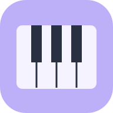

Play • See • Explore
MIDI Piano
Connect your keyboard. See every note you play.
Connect a keyboard
The Bluetooth picker shows only devices advertising the standard MIDI service.
Use Chrome on your Samsung phone and allow device access when asked.
Practice a score
For Google Drive, choose Drive from the file picker’s ☰ menu. Sign in through the Google Drive app first. Your selected score stays on this phone.
No score loaded
Load an uncompressed .musicxml or .xml file. Connect your keyboard to practice; demonstration plays on your phone.
Tap a note to change position. In Practice, correct pitches advance the score; wrong keys wait. Play chord notes together. Rests advance automatically. Rhythm is not graded.
About this practice view
Simplified concert-pitch notation: treble and bass staves, explicit sharps, and note names. Original engraving, beams, lyrics, ornaments, and key signatures are not reproduced. Tied notes are combined into one held note. Demonstration uses a synthesized tone at your selected tempo; repeats are played once in written order. Compressed .mxl files should be exported as .musicxml first.
Your notes
Play a note on your connected keyboard.
88-key display · swipe sideways · middle C is C4. Notes outside this range still appear above.
Connection help
Bluetooth: Enable Bluetooth and the piano’s Bluetooth MIDI mode. Tap Connect Bluetooth and choose the keyboard. Only devices advertising the standard BLE-MIDI service appear. If yours is missing, enable its Bluetooth MIDI mode or use USB-C. Close other music apps that may already be connected. Some Android versions also require location services for Bluetooth discovery.
USB-C: Use a data-capable USB cable or USB-C OTG adapter. Connect to the piano’s USB-to-host port, then tap Connect USB-C / MIDI and allow access. Choose your keyboard from the list. Use external keyboard power or a powered hub if your phone cannot supply enough power.
The keyboard must support standard BLE-MIDI or class-compliant USB MIDI. Bluetooth audio-only devices do not send notes. USB device names come from Android and may not identify the connection type.
Live playing uses your piano’s own speakers. Demonstration plays synthesized notes through the phone. Scores and notes stay on this device and are not uploaded. Only one connection is active at a time.